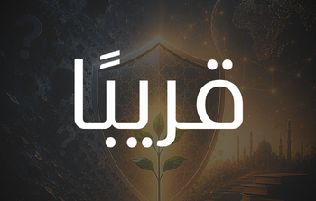

حال الإلحاد في العالم الإسلامي 2026
رصد شامل لأبرز التحولات والتيارات والمنصات خلال العام.
Loading...
يعمل مرصد بصائر العالمي على بناء قاعدة بيانات مرجعية تتتبَّع تطور ظاهرة الإلحاد ومدارسها الفكرية في العالم الإسلامي والغرب، وتحلِّل أنماط انتشارها، وتقيس أثرها بأدوات بحثية حديثة.
منصة إلحادية مرصودة عالمياً
دولة يغطّيها الرصد
تيارات إلحادية رئيسية تُتابَع
يوم رصد متواصل
يتجاوز عدد المتابعين لأبرز منصات الإلحاد العربية الـ30 مليون مشترك، مع نمو متسارع على تيك توك ويوتيوب.
الفئة العمرية 18-30 تمثّل غالبية متابعي المحتوى الإلحادي، مع تنامي واضح بين المراهقين دون 18 عاماً.
تصاعد ملحوظ في الشرق الأوسط وشمال إفريقيا، ووصول الإلحاد إلى قلب الجامعات الإسلامية في إندونيسيا وماليزيا.
تقسيم منهجي لأربعة فروع: الإلحاد الباطني (الشحرورية)، الروحي، المادي، والنسوي، مع تتبع أدبيات كل تيار.

2026رصد شامل لأبرز التحولات والتيارات والمنصات خلال العام.
دراسة معمَّقة عن أنماط استهلاك المحتوى الإلحادي في الفئة العمرية الصاعدة.
قراءة في ظاهرة الجيل الثاني الملحد، ومحفزاتها الاجتماعية والفكرية.
رصد أسبوعي لأبرز محتوى منصات الإلحاد العربية، مع تصنيف الموضوعات وقياس التفاعل.
تحليل شهري لأبرز الفتاوى والمواقف الفكرية الصادرة من المنصات المختلفة وتقييمها.
تقرير ربع سنوي يجمع مؤشرات الانتشار والتوزع العمري والجغرافي والتيارات الفكرية.
دراسة متخصصة لتفكيك أكبر فتنة باطنية في تاريخ الأمة، مع نقد منهجي لأطروحات محمد شحرور وأتباعه على قناة "مجتمع".
قراءة في موجة التناسخ والكارما والفيض التي تروَّج لها قنوات تجاوزت 174 مليون مشاهدة.
رصد المنصات والمحتوى الإلحادي عبر أدوات متخصصة
تصنيف المحتوى ضمن التيارات الأربعة بمعايير محدّدة
تحليل البيانات بأدوات إحصائية ومنهجية معتمدة
إصدار تقارير وتحليلات للباحثين وصنّاع القرار
للباحثين والإعلاميين وصنّاع القرار: تواصل مع المرصد للحصول على تقارير مخصَّصة أو للتعاون البحثي.